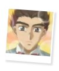
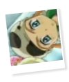

|
I N F O R M A T I O N » P A R T N E R S
Goh
Goh probably finds it most amusing to poking fun at Mannen. He's always calling Mannen a "brat" or "kid." He does it even though he knows Mannen dislikes being called and treated like a kid. Mannen respects Goh a lot, even to the point of fearing that he'll be yelled at for doing something wrong. He would always think "If Goh were here, he'd..." or "If Goh and the others find out, we'll be beaten up..." When Goh does find out about Mannen and the other kids bringing Himeno to Leafunia without the adults' permission or knowledge, he was indeed mad at Mannen. Mannen, in turn, froze up like a stick in fear. ^_^ Mannen looks up to Goh a lot, and although Goh gives Mannen mostly positive influence, he has also taught Mannen how to swear. xD For a kid his age, Mannen uses profanity quite a bit. Mannen follows Goh around quite a bit as well. Goh is like an older brother to Mannen.
Hajime
Hajime is one of the younger Liefe Knights, and the knight of water. He is a pretty obedient kid, and follows Mannen around a lot along with Shin. Mannen likes to boss him and Shin around, although he calls Shin names a lot more than he does Hajime. Mannen is almost always seen with Hajime and Shin.
Shin
Shin is the youngest of the eight Liefe Knights, and the knight of plants. He can feel the plants' pain and such, he has a special bond with them.^_^ He can use plants to travel around, and he creates the shield that isolates the fights of the mayochuu from the real world. Mannen is always making Shin cry by calling him names and telling him to shut up. But as explained before, Mannen's only trying to act like an adult. :3 Mannen is almost always seen with Shin as well as Hajime.
Himeno Awayuki
Mannen has always believed in Himeno from the beginning. He was very energetic in helping to find the next Pretear, and his bond with Himeno only grew stronger as time passed. Mannen and the other young Liefe Knights like to call Himeno "Himeno-neechan,"which roughly translates to "older sister Himeno." Himeno is the first person who shows direct love and care towards Mannen, and Mannen is very unused to that. He grows close to Himeno as time goes on, as with all of the other knights. Mannen is always eager to protect Himeno and be her guard. He also likes to pret with her.
ainoyumeNET 2002 Trinity. All rights reserved. 
|
INFORMATION
/basics
/personality
/thoughts
/partners
/power
/voice
/quotations
|
MEDIA
/anime
/manga
/wallpapers
|
SITE RELATED
/updates
/links out
/link Ice Brat!
/credits
/contact me
|